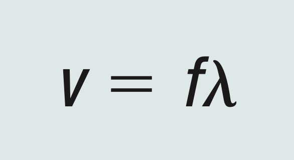
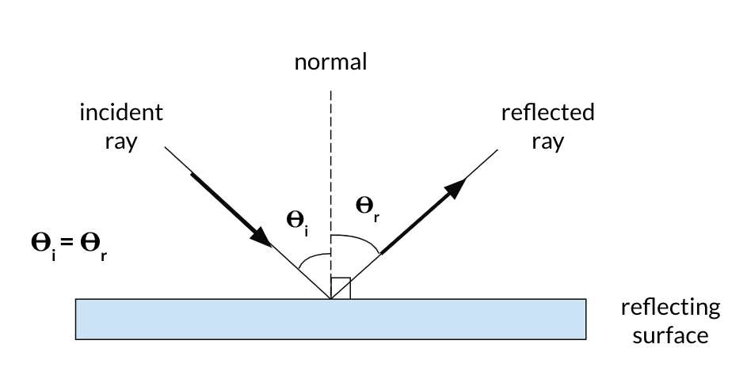
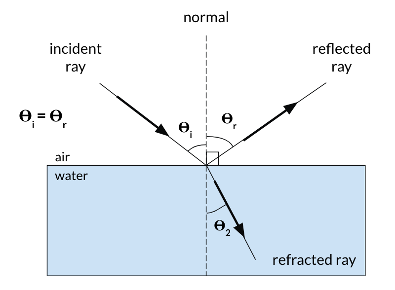
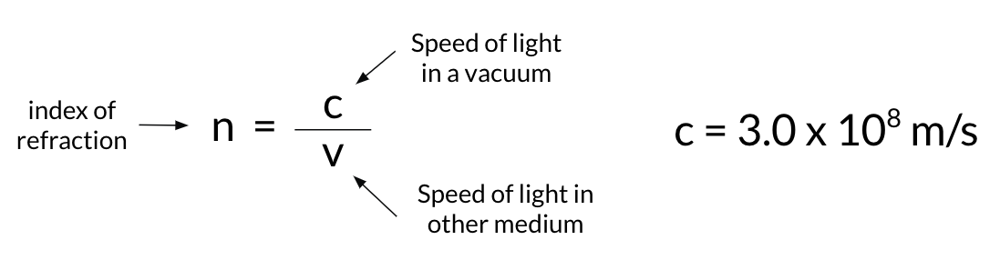
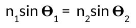
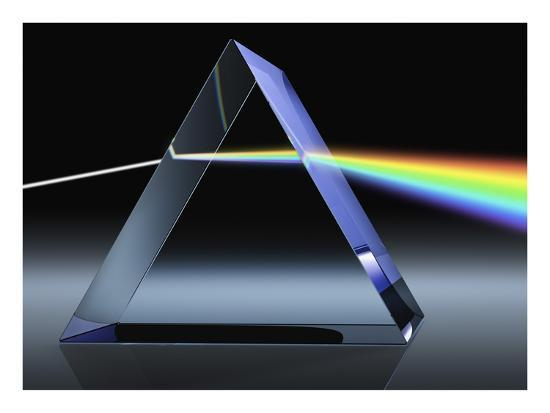

Waves and Light
Properties of Waves
Here are some key terms and properties of waves:
Aperiodic waveis a wave that repeats itself over regular intervals.
Transverse wavesare waves that travel perpendicular to the direction of motion.
Longitudinal wavesare waves that travel parallel to the direction of motion.
Thewave frontis the set of all points where the wave has the same phase.
Thecrestof a wave is the maximum point in a period.
Thetroughis the minimum point in a period.
Thewavelengthis the distance from crest to crest or trough to trough. This is also the distance between corresponding points of two consecutive waves.
Thefrequencyis the number of waves that pass a fixed point in a given amount of time.
Theamplitudeis the maximum displacement of the wave.

The above image shows the features of a wave discussed above.
Theuniversal wave equationallows us to determine the speed of a wave. It is:
Reflection
Light travels in straight lines in many instances.Reflectionis a change in direction after meeting an obstacle, for example, a mirror, where the original ray and the reflected ray are on the same side of the mirror, as shown in the diagram.
Light behaves according to the law of reflection, which is that for reflection from a flat surface, the angle of incidence is always equal to the angle of reflection. This means that theta i is equal to theta r.
Refraction
When light strikes a transparent material such as glass or water, some of the light is reflected, and the rest of light passes through the material. The part that travels through the material is called the refracted ray.
The direction of the refracted ray is different from the direction of the incident ray, and this is an effect calledrefraction.
Light travels at a different speed in different mediums.The ratio of the speed of light in a vacuum to the speed of light in another medium is called the index of refraction, which is c / v, where thespeed of light (c) is 3.0 x 108 m/s.
When light travels from a medium with a faster speed to a medium with slower speed, light is refracted towards the normal. When light travels from a medium with a slower speed to a medium with a faster speed, light is refracted away from the normal.
We can useSnell’s lawto determine the angle of refraction. Snell’s law is:
In this equation, n1 is the index of refraction for the first medium and n2 is the index of refraction for the second medium. 𝜭1 is the angle of incidence, and 𝜭2 is the angle of refraction.
Diffraction and Interference
Diffraction is the bending of a wave as it passes through an opening. The amount of diffraction depends on the wavelength and the size of the opening.
When two waves in the same medium interact, the phenomenon is called interference.Constructive interferenceoccurs when two interfering waves have displacement in the same direction where they superimpose.Destructive interferenceoccurs when two interfering waves have displacement in opposite directions where they superimpose.
There are many real-life applications of diffraction and interference. Some include holograms, separating white light, and the bending of light around a corner.
